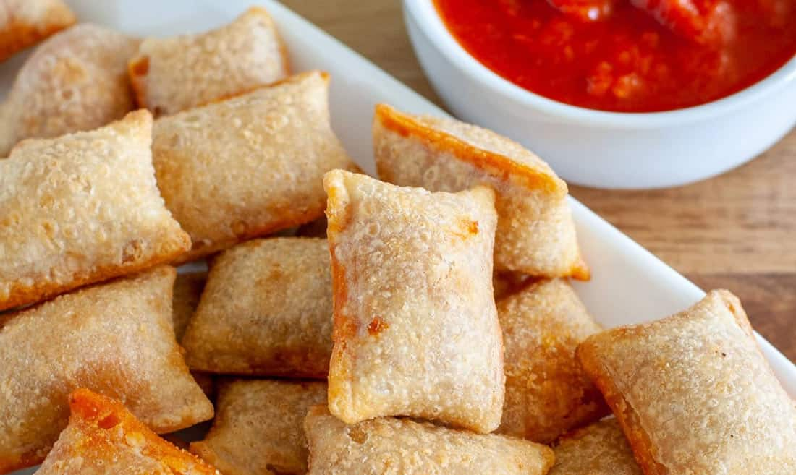

Pizza Rolls

Delicious bite-sized pizzas.
Ingredients
- Bag of Pizza Rolls
- Oven or Air Fryer
Steps
- Place pizza rolls on baking pan or in fryer basket.
- If using oven, heat your rolls at 425 degrees F for 10 minutes; if using air fryer, cook at 400 degrees for 5 minutes.
- Allow your rolls to cool, then enjoy!
Back to Recipes